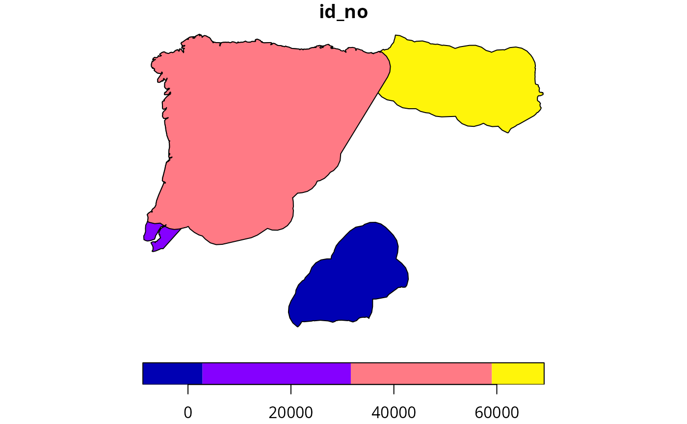

Import species geographic range (i.e., extent of occurrence) data obtained from the International Union for Conservation of Nature (IUCN) Red List of Threatened Species.
read_spp_range_data(path, n = NULL)character File path to the data (zip archive) file.
numeric Number of features in the dataset to import.
Defaults to NULL such that all available data is imported.
A sf::sf() object containing the dataset.
Data for amphibians, reptiles, and mammals can be obtained directly from
the International Union for Conservation of Nature (IUCN) Red List website
(see https://www.iucnredlist.org/resources/spatial-data-download).
Data for birds can be obtained by requesting data from
BirdLife International
(see http://datazone.birdlife.org/species/requestdis).
To standardize data from the IUCN Red List and BirdLife International,
the "SISID" and "SISRecID" columns are renamed as "id_no".
# find file path for example range data following IUCN Red List data format
## N.B., the range data were not obtained from the IUCN Red List,
## and were instead based on data from GBIF (https://www.gbif.org/)
path <- system.file("extdata", "EXAMPLE_SPECIES.zip", package = "aoh")
# import data
spp_range_data <- read_spp_range_data(path)
# preview data
print(spp_range_data)
#> Simple feature collection with 4 features and 26 fields
#> Geometry type: POLYGON
#> Dimension: XY
#> Bounding box: xmin: -9.479736 ymin: 36.59422 xmax: 3.302702 ymax: 43.76455
#> Geodetic CRS: WGS 84
#> # A tibble: 4 × 27
#> id_no binomial prese…¹ origin seaso…² compi…³ yrcom…⁴ citat…⁵ subsp…⁶ subpop
#> <dbl> <chr> <int> <int> <int> <chr> <dbl> <chr> <chr> <chr>
#> 1 979 Alytes di… 1 1 1 Derive… NA NA NA NA
#> 2 59448 Calotrito… 1 1 1 Derive… NA NA NA NA
#> 3 4657 Chiogloss… 1 1 1 Derive… NA NA NA NA
#> 4 58622 Rana iber… 1 1 1 Derive… NA NA NA NA
#> # … with 17 more variables: source <chr>, island <chr>, tax_comm <chr>,
#> # dist_comm <chr>, generalisd <int>, legend <chr>, kingdom <chr>,
#> # phylum <chr>, class <chr>, order_ <chr>, family <chr>, genus <chr>,
#> # category <chr>, marine <chr>, terrestial <chr>, freshwater <chr>,
#> # geometry <POLYGON [°]>, and abbreviated variable names ¹presence,
#> # ²seasonal, ³compiler, ⁴yrcompiled, ⁵citation, ⁶subspecies
# plot data
plot(spp_range_data[, "id_no"])
